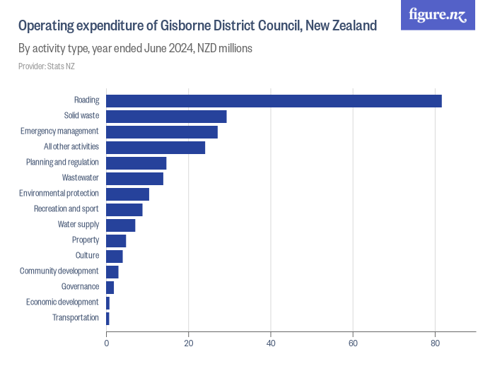

Posted: September 19, 2025
If we want to lighten the load we all need to change
Stop wasting all our money!
I've been hearing variations of "the council needs to stop wasting all our money" on the campaign trail. When asked for examples of that waste, it's:
- "Too many staff!"
- "Bloody raised crossings!", and the
- "Cost of compliance and consenting!"
"Too many staff!"
There have been notable increases in staffing levels in the last three years. These increases were mostly to support the necessary post-Gabrielle recovery work, these workers haven't been sitting around wasting time.
Hopefully, it sounds like a business-as-usual state will return in the next year.
But at the same time, central government reforms around resource management and water will change, again, what councils need to do.
And we should expect another 1-in-a-100-year weather event in the next few years.
It's not wishful thinking to reduce staffing levels, but signs from central government and the weather gods indicate that it might be less a case of "getting back to normal" and more a case of "this is our new normal".
"Bloody raised crossings!"
Putting Grey St aside, which was funded by NZTA, managed by a trust, enabled by the council. The council's biggest expense here has been managing feedback from the public.
Focusing on the bloody raised crossings elsewhere... as public infrastructure, I don't view them as a waste of money. And I've spoken on this in the past:
There will be inefficiencies in the way the work is procured and managed by large third parties. Here, I would like to see increased in-house technical expertise and authority to reduce our reliance on outside consultants.
"The cost of compliance and consenting!"
I want to believe there are gains we can make here. I've said elsewhere:
The goal is for our council to be a conscientious enabler, with an increased risk appetite, while ensuring negative externalities are not passed on to the public.
And from what I'm hearing, all council candidates agree.
So why do the public feel like compliance and consenting is so onerous and costly?
There will be operational efficiencies, sure, there always is and always will be in every organisation, public or private.
It appears the big issue is the burden of responsibility that has built up for the council.
It isn't a surprise that councils have become extremely risk-averse with:
- the leaky building saga
- upholding expected environmental quality standards
- so-called "no surprises" policies popularised by the Key government and filtered through public institutions
- a changing climate changing risks
- the building code and regulatory capture by our major suppliers
- deferring decisions to consultants
- changes to health and safety legislation
- public backlashes fueled by social media
So risk aversion is not an easy thing to unravel. Central government looks to be making some helpful changes.
For us to help the council get there too, we all need to take some responsibility and ownership, and accept that when genuine mistakes happen it's generally OK. With that shift, we can appreciate that humans with some decision-making authority are working in our best interests.
We don't simply point the finger at each other, we work together, and we all continue to learn and improve.
Naive? Probably.
Just fix the roads
What's the biggest cost to council?
Roads, pipes, waste, and emergency clean-ups.

Three ways to materially reduce the long-term rates burden come to mind:
- Have more ratepayers
- Manage road and pipe usage more effectively and efficiently
- Be more resourceful, self-sufficient, and resilient
Not trying to be too hippy dippy, but we could:
- incentivise us to collect the water off our roofs;
- seriously reduce, reuse, and repurpose; and
- use mentally and physcially healthier means to get around when we can.
What are your simple or innovative suggestions and fixes? It's exactly what I'm here for!
Other diary entries
- Attending the Candid Speed Date at JT Contractors Ops Yard
- My council candidate video
- Marching in support of those leading the pay equity fight
- That not being on social media thing
- Attending Community Hui at the Gisborne Bowling Club
- Podcast with Jack Marshall - Now That's an Idea
- TL;DR? Here's the 1 minute pitch
- How to vote
- Ways to support horticulture without a background in horticulture
- A good overview of my, and your other fave's, policy positions
- Bringing education, research, trusts, and industry together; and the problem with Joint Ventures
- A bit of motivation to make a start
- The homeless - what to do?
- Māori Wards - a union of Te Ao Māori and a struggling western democratic capitalism
- Attending the Gisborne Business and Professional Women's Meet the Candidates Meeting
- Insulation - a personal reflection on the Trust Tairāwhiti AGM
- Attending the Gisborne Chamber of Commerce Meet the Candidates Debate
- Attending Kiri Te Kanawa Retirement Village's Meet the Candidates Afternoon
- Attending U3A's Meet the Candidates Morning